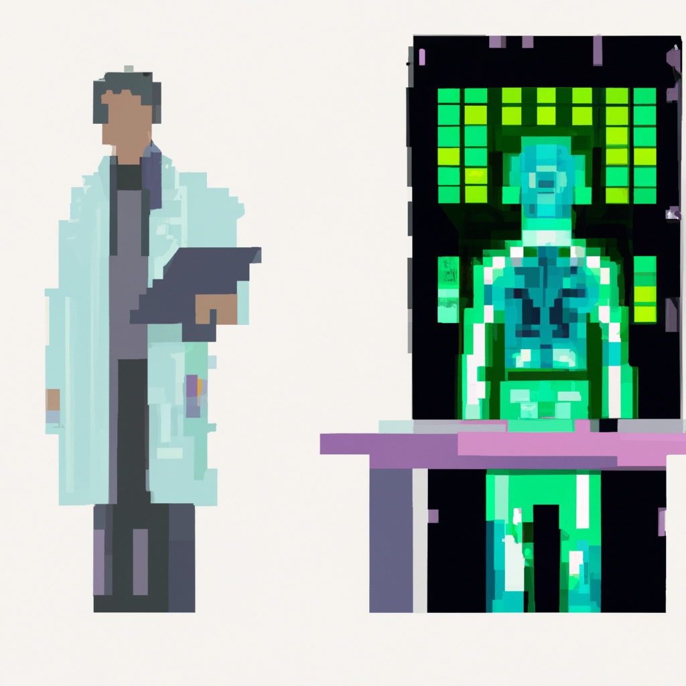

Why AI will never replace the radiologist

Why AI will never replace the radiologist
As a Python instructor teaching people about machine learning, I often get asked about the potential for AI to replace certain professions. One field that often comes up in these discussions is radiology. With the advancements in machine learning and its ability to analyze medical images, many people wonder if AI will eventually replace radiologists.
However, as someone who has worked closely with both machine learning and medical professionals, I firmly believe that AI will never fully replace radiologists. Here are a few reasons why.
First and foremost, AI can only do what it is trained to do. While it is true that machine learning algorithms can be trained on vast amounts of medical images to detect abnormalities, it still requires human input and supervision. Radiologists have years of medical training and experience that cannot be replicated by a machine.
Additionally, AI is limited by the quality and quantity of data it is trained on. If a machine learning algorithm is only trained on a specific type of medical image or a certain demographic, it may not be able to accurately detect abnormalities in other cases. Radiologists, on the other hand, have the ability to adapt and use their knowledge and experience to analyze a wide range of cases.
Furthermore, AI lacks the ability to understand the full context of a patient's medical history. While it may be able to detect abnormalities in an image, it cannot take into account other factors such as the patient's symptoms, medical history, and current medications. This information is crucial in making an accurate diagnosis, and it is something that only a human radiologist can do.
Of course, there are certainly benefits to using AI in radiology. It can help speed up the process of analyzing images and can potentially catch abnormalities that a human might miss. However, I firmly believe that it can never fully replace the expertise and experience of a human radiologist.
In the end, AI and machine learning should be seen as tools to aid and enhance the work of radiologists, not replace them. As technology continues to advance, it is important for us to remember the value of human expertise in fields such as medicine. So while AI may be able to assist with certain tasks in radiology, it will never be able to fully replace the important work of a radiologist.